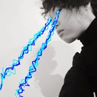
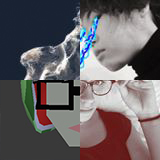

TBA - Workshop

MY SELFIE IS MORE OR LESS ENTIRELY BAD MUSIC- an introduction on audacity, and its image editing features.
By Pepijn Willekens
@PepijnWillekens
TBA - Open Discussion
GIVE ME ANOTHER BOILED EGG AND TELL ME MORE ABOUT YOU- indie marketing is bullshit, let’s bullshit together about twitter, itch.io, and you.
By Lisa Schaeffer
@Silversober
TBA - Workshop
PHOTOGRAMMETRY WORKSHOP- turning perfect picture eggs into perfect picture 3D eggs
by Ivan Notaros
@nothke
TBA - Workshop?

FACETATS SESH- maybe i’ll give u some temporary face tattoos cuz that’s
By Nomi
@the_nomi
TBA - Panel

-- SCRAMBLEPANEL --Remembering Scrambleshake #01
By Peggijn, Nomegg, Ivegg, Lisegg
TBA - Open Discussion
FUCK THE GAMES PRESS- It’s stupid and they know it, but it’s your fault. Let’s solve this!
By Patrick Seibert
@SomniumLG
TBA - Workshop
Making a fake egg web page on the fake internet in my game Hypnospace Outlaw.
By Jay Tholen
@JayTholen
TBA - Talk
BIG JUMP SMALL STEPS- (in)decadent event organisation
By adriel beaver
@adrielbeaver
TBA - Talk
A TALK ABOUT BEES IN GAMES- let's talk about bees in games
By Sean Oxspring
@OxyOxspring
TBA - Short talk followed by discussion
GAMES FOR MAGICK- Tarot and other ways to self-edit your psyche using game-like thingies
By David Stark
@zarkonnen_com
TBA - Talk I guess.
LET’S TALK GAMING BETTER AKA ARGUMENTS I’M TIRED OF HEARING AKA STOP ‘SPLAINING, START ANALYSING- Analysing games makes them better, coming up with eggscuses why we shouldn’t, makes them bad(der).
By Bertine van Hövell
@bvhtw